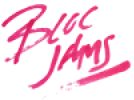
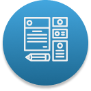
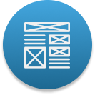

A web-based music player.
A cloud-storage service prototype.
My Process
LISTEN
Every project begins with open ears to the voices of clients, stakeholders, and users with their wishes for their product.
RESEARCH
Research is conducted, utilizing survey data and competitive analysis to help drive the end product in the right direction.
USER DETERMINATION
User flows and personas are created, keeping the end-user in mind through the journey.
INITIAL DESIGN & FEEDBACK
Wireframes are designed, tested, and are continuously iterated upon with usability testing and feedback.
POLISHED DESIGN & CODE

The product is then designed with friendly and efficient UI elements in mind, keeping a sharp eye on how it would translate into code.